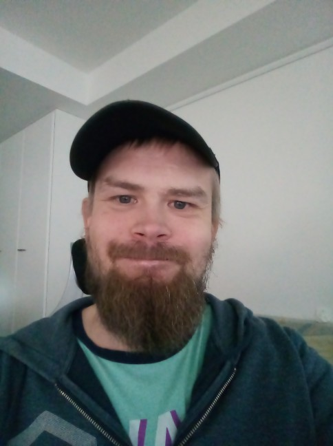

Welcome to my web page!
Hello and welcome. My name is Matti Kemppinen and I am currently a fourth year math student at the University of Eastern Finland, Joensuu.
Here is some random info about me:
- Born 1st of April in 1986 at Ruokolahti, South Carelia, Finland.
- I am 179 cm tall and weigh about 80 kg.
- I have mud colored hair and blue-grey eyes.
- I have lived most of my adult life at Lappeenranta, South Carelia.
- My favorite color is green.